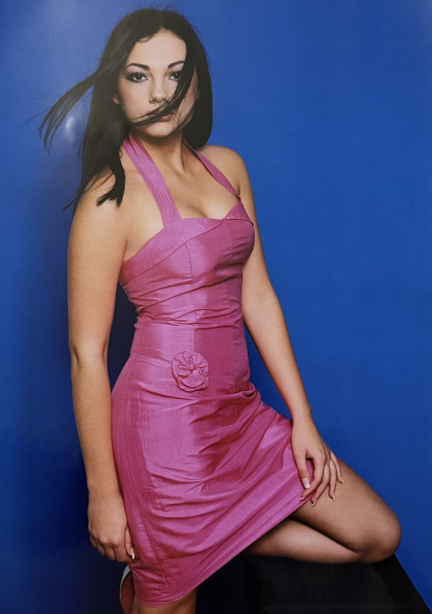
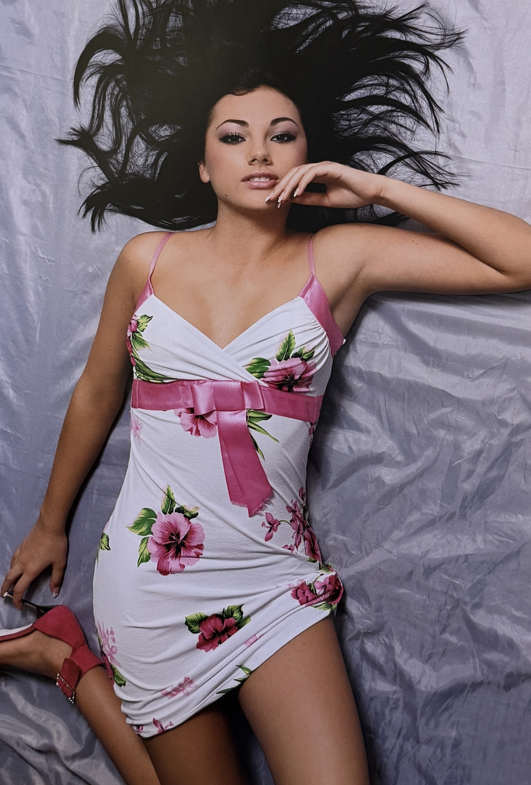
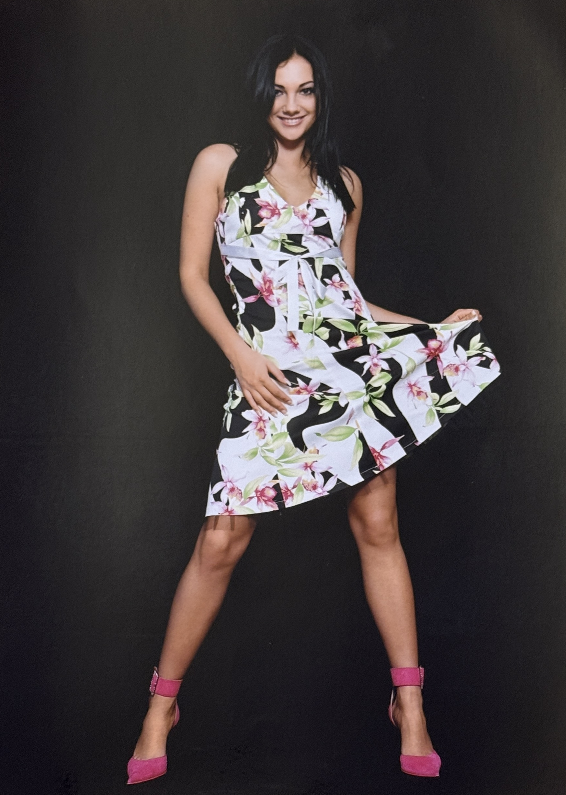
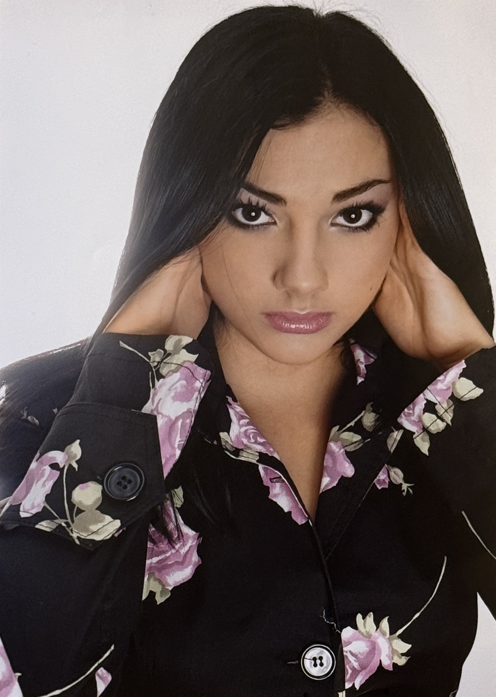
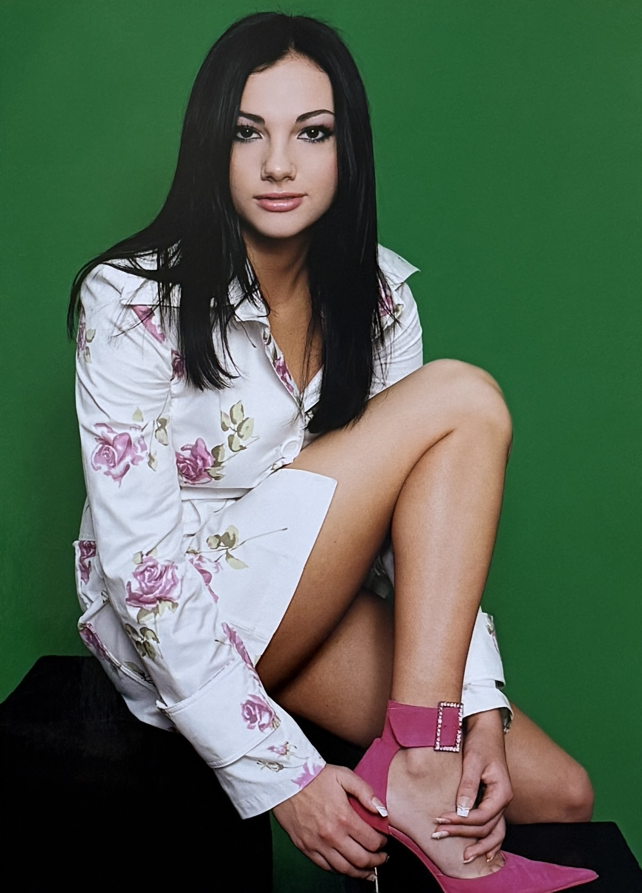

Uliana Latyk Photo Session (2004)

Basic Information
| Person | Uliana Latyk |
| Current Stage Name | Ana Danch |
| Material Type | Photo Session |
| Year | 2004 |
| Exact Date | Unknown |
| Photographer | Andrii Honcharenko (Андрій Гончаренко) |
| Makeup | Мар'яна Дідиченко |
| Studio / Company | OK'S fashion company |
| Archive Category | Photos / Photo Session |
| Preserved Materials | Six photographs |
Description
This archival record documents a 2004 photo session with Uliana Latyk, who is now known professionally as Ana Danch.
The preserved material consists of six photographs from the same photo session and is presented as a single archival record.
Photography is credited to Andrii Honcharenko (Андрій Гончаренко), with makeup by Мар'яна Дідиченко. The photo session was produced in association with OK'S fashion company in Lviv.
The photographs document Uliana Latyk during the early period of her artistic career and form part of the photographic history preserved in the Ana Danch Archive.
Archive Information
| Original Name | Uliana Latyk |
| Current Stage Name | Ana Danch |
| Year | 2004 |
| Exact Date | Unknown |
| Material | Photo Session |
| Number of Preserved Photographs | 6 |
| Archive Category | Photos / Photo Session |
Credits
| Subject | Uliana Latyk |
| Current Stage Name | Ana Danch |
| Photography | Andrii Honcharenko (Андрій Гончаренко) |
| Makeup | Мар'яна Дідиченко |
| Studio / Company | OK'S fashion company |
Source Information
| Source Type | Original Photographic Material |
| Material Type | Photo Session |
| Year | 2004 |
| Exact Date | Not identified |
| Photographer | Andrii Honcharenko (Андрій Гончаренко) |
| Makeup | Мар'яна Дідиченко |
| Studio / Company | OK'S fashion company |
| fashion@oksmodels.com | |
| Address | м. Львів, вул. Водогінна, 2, офіс 314 |
| Telephone | (0322) 418 320 |
| Preserved Photographs | 6 |
Archive Materials
Uliana Latyk photo session, 2004. Photograph 1 of 6.

Uliana Latyk photo session, 2004. Photograph 2 of 6.

Uliana Latyk photo session, 2004. Photograph 3 of 6.

Uliana Latyk photo session, 2004. Photograph 4 of 6.

Uliana Latyk photo session, 2004. Photograph 5 of 6.

Uliana Latyk photo session, 2004. Photograph 6 of 6.
Notes
This photo session documents Uliana Latyk during her early artistic career in 2004. Uliana Latyk is now known professionally as Ana Danch.
All six preserved photographs belong to the same documented photo session and are therefore presented together as one archival record.
Photography for the session is credited to Andrii Honcharenko (Андрій Гончаренко), makeup to Мар'яна Дідиченко, and the associated studio / company is OK'S fashion company.
The exact date of the photo session within 2004 has not been confirmed and is therefore not supplied by assumption.
The historical email address, street address and telephone number associated with OK'S fashion company are reproduced solely as archival source information. Their inclusion does not imply that these contact details remain current.